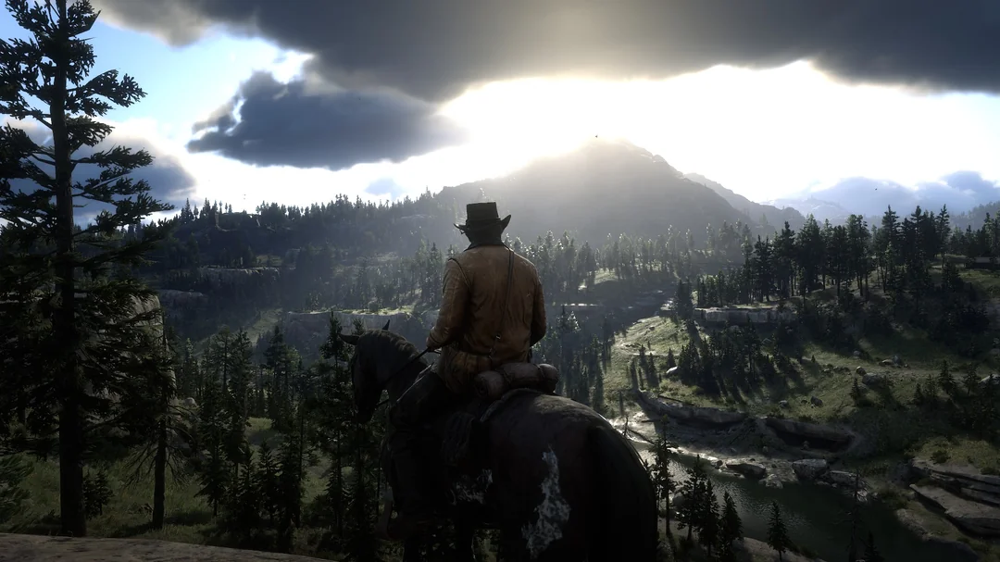

Bienvenido {{ username }}

Mundo abierto
Los juegos de mundo abierto ofrecen exploración libre en entornos vastos y misiones no lineales. Destacan por su libertad y profundidad.
 RPG
Los juegos RPG se centran en el desarrollo de personajes y la narrativa, con progresión a través de misiones y mejoras de habilidades.
RPG
Los juegos RPG se centran en el desarrollo de personajes y la narrativa, con progresión a través de misiones y mejoras de habilidades.
 Simulación
Los juegos de simulación recrean actividades del mundo real, permitiendo a los jugadores gestionar y experimentar diversas situaciones y entornos.
Simulación
Los juegos de simulación recrean actividades del mundo real, permitiendo a los jugadores gestionar y experimentar diversas situaciones y entornos.